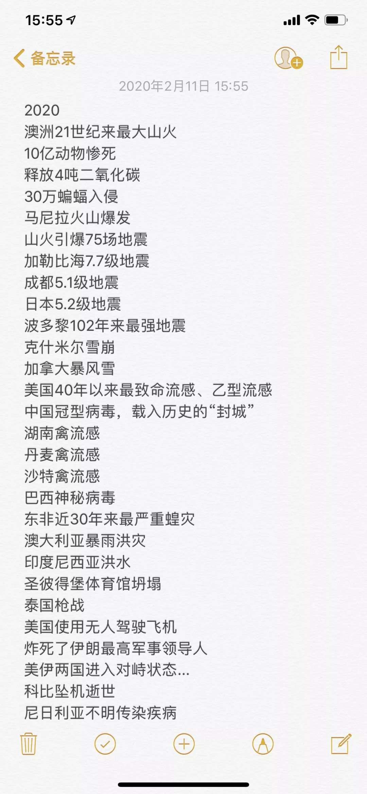

乡愁与老友
原文链接 备份链接 2020年2月9日。 农历正月十六。 武汉封城第十八天。 天门封城第十七天。 今天居然没有被社区宣传疫情的大喇叭吵醒，一觉安稳睡到了10点半。而我的床丝毫没有想放我走的意思。只好翻身，背对阳光，摸出手机。并不饿，却非常 …

2020年2月11日。
农历正月十八。
武汉封城第二十天。
天门封城第十九天。
2012年我曾写过一篇末日遗书，可惜喧嚣过后沦为噱头。当时还许下去斯台普斯中心为科比助威的愿望，现在看来过于天真。叵测造化面前，人类的努力显得不堪一击。今天我不许那些假大空的妄想，就认真说几句废话。
1、一切无外乎三个问题：何种目的，什么手段，将如何被定义；（你是谁，你从哪里来，要到哪里去。）****
2、爱就是意义，意义就是爱。爱可以让你与世界同频共振。在日益荒谬和虚拟的有限空间，这是唯一能获得无限生命的归属和答案。****
3、人与世界最主要矛盾，归根结底是人类身体进化太慢。
4、想象力才是人的核心竞争力。有本英文书叫《The Sense of Style》，作者提到了一个词，叫做“知识的诅咒”（the curse of knowledge）。意思是说：一旦我们知道了某些事情，就会很难想象不知道它时，是什么样子。
5、人间冷暖，唯有自渡。“ 你所患的疾病90%都是靠你的免疫力治愈的。”医者格言：偶尔治愈；常常帮助；总是安慰。
6、当你不为永恒而活，你就得到彻底解脱。你不会失去一样你从没得到过的东西，除非那个东西是你的执念；但凡得到你就不会再失去它了，除非你选择把它扔掉。
7、舍大于得。求知即行善。存天理灭人欲。解放思想实事求是与时俱进。抛弃成见，就像你现在已经得偿所愿一样去相信、去行动。
8、末日也是救赎，要设立Deadline。就像我每天写的这些废话，必须在明天零点前交卷。
9、是活在当下没错，可别为当下而活。就像我每天写的这些废话，但这些废话不是为今天而写。
10、不要让我的眼睛、我的文字代替你去看世界，那样你只能看到我看到的世界，任何人都只能作为你的参考和样本；
11、参加不了我的婚礼就来参加我的葬礼吧，不能为你们敬酒而已，没差。
12、不要企图未经我的同意就复活我。


后台发送关键词“末日遗书”，
分享给你2012年那篇末日遗书。
长按二维码向我转账
受苹果公司新规定影响，微信 iOS 版的赞赏功能被关闭，可通过二维码转账支持公众号。
原文链接 备份链接 2020年2月9日。 农历正月十六。 武汉封城第十八天。 天门封城第十七天。 今天居然没有被社区宣传疫情的大喇叭吵醒，一觉安稳睡到了10点半。而我的床丝毫没有想放我走的意思。只好翻身，背对阳光，摸出手机。并不饿，却非常 …
原文链接 备份链接 2020年2月8日。 农历正月十五，元宵节。 武汉封城第十七天。 天门封城第十六天。 两天没见五四兄动态了，昨晚看到一张李文亮医生的照片，十分神似瘦版的他，就想发给他看看，顺便问他最近有没有更文。哪知消息一发过去被弹 …
原文链接 备份链接 2020年2月7日。 农历正月十四。 武汉封城第十六天。 天门封城第十五天。 我迟迟不敢回复你，因为据我了解的信息和过往的经验看，所谓抢救，多半只是为了烟雾舆论的手段而已。我并非不相信奇迹，而是被现实打脸的次数太多。经 …
原文链接 备份链接 2020年2月6日。 农历正月十三。 武汉封城第十五天。 天门封城第十四天。 闹哄之后，豆瓣日记今天被暂停使用了。这个消息居然在豆瓣引发了斯德哥尔摩综合症般的辩论。世风日下，文青们都被训练得在大是大非面前排队站位了。豆 …
原文链接 备份链接 （期待你明天的乱炖） 2020年2月5日。 农历正月十二。 武汉封城第十四天。 天门封城第十三天。 按这个新冠病毒14天的潜伏期上限算，今天我们终于可以嘘口气，以示自己解除隐患了。上午还跟伯伯说，我们要不要喝点酒庆祝一 …